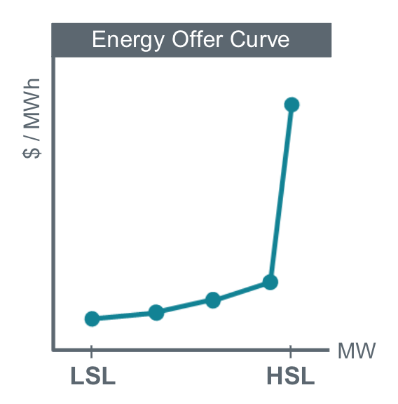
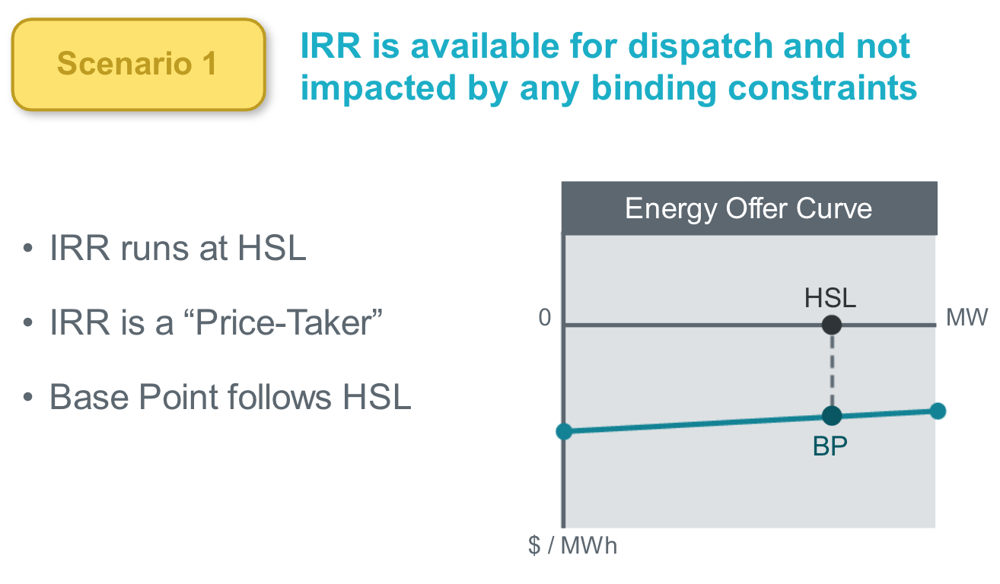
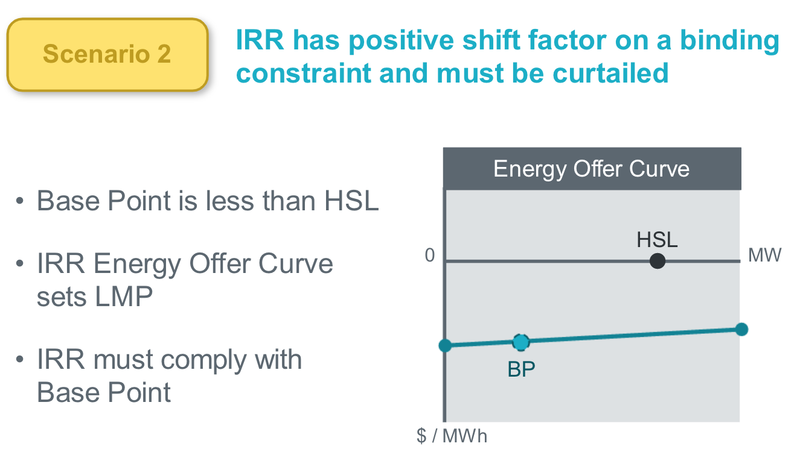
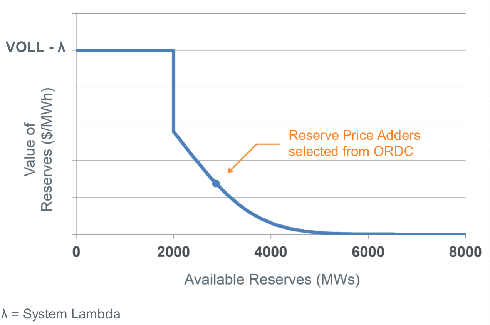
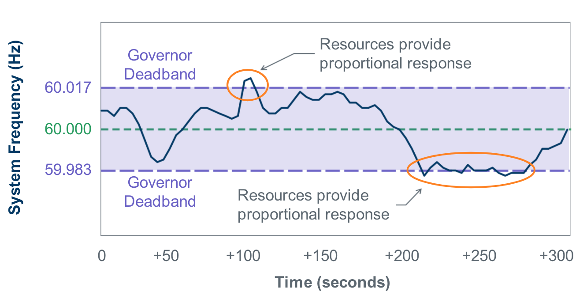
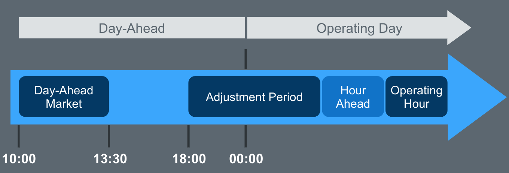

Table of Contents
- 1. Concepts
- 1.1. Ancillary Services
- 1.2. Base Point
- 1.3. Base Point Deviation Charge
- 1.4. Bilateral Trade
- 1.5. Capacity
- 1.6. Capacity Obligation
- 1.7. Capacity Supply
- 1.8. Capacity Shortfall
- 1.9. Congestion
- 1.10. Congestion Rent
- 1.11. Congestion Revenue Rights
- 1.12. Cost-Optimization Processes
- 1.13. Current Operating Plan
- 1.14. Day-Ahead Market Point-to-Point Obligation
- 1.15. Distribution System
- 1.16. Electrical Bus
- 1.17. Energy Emergency Alert
- 1.18. Energy Offer Curve
- 1.19. Resource Limits
- 1.20. ERCOT-Polled Settlement Meter
- 1.21. Financial
- 1.22. Full Interconnection Study
- 1.23. Hub
- 1.24. Inter-Control Center Communications Protocol
- 1.25. Intermittent Renewable Resource
- 1.26. IRR Group
- 1.27. Locational Marginal Price
- 1.28. Market Information System
- 1.29. Markets
- 1.30. Minimum Energy Offer
- 1.31. Net Load
- 1.32. Network Operations Model
- 1.33. Non Opt-in Entity
- 1.34. Operating Reserve Demand Curve
- 1.35. Peaker Net Margin
- 1.36. Probability of Exceedance
- 1.37. Intermittent Renewable Resource Hourly Forecasting
- 1.38. Capacity Available Tool
- 1.39. Point of Interconnect
- 1.40. Primary Frequency Response
- 1.41. Real-Time Dispatch
- 1.42. Real-Time Energy Imbalance
- 1.43. Regulated Entity
- 1.44. Reliability Unit Commitment
- 1.45. RUC Capacity Short Charge
- 1.46. Resource
- 1.47. Security Constrained Economic Dispatch
- 1.48. Settlement Point
- 1.49. Settlement Point Price
- 1.50. Real-Time Resource Meter Price
- 1.51. Real-Time Reserve Price for On-Line Reserves
- 1.52. Real-Time On-Line Reliability Deployment Price
- 1.53. Startup Offer
- 1.54. Subsynchronous Resonance
- 1.55. System-Wide Offer Cap
- 1.56. Time Periods
- 1.57. Unit Reactive Limit
- 1.58. Value of Lost Load
- 1.59. Verbal Dispatch Instruction
- 2. Market Participants
- 2.1. Congestion Revenue Rights Account Holder
- 2.2. Consumer
- 2.3. Distribution Service Provider
- 2.4. Electric Reliability Council of Texas
- 2.5. Independent Market Monitor
- 2.6. Load Serving Entity
- 2.7. Public Utility Commission of Texas
- 2.8. Qualified Scheduling Entity
- 2.9. Resource Entity
- 2.10. Transmission Service Provider
- 2.11. Independent Market Information System Registered Entity
- 3. Ideas/Scratchpad
- 4. Modeling
- 5. Nodal Protocols
1 Concepts
For ERCOT-provided definitions and acronyms, see Section 2 of the ERCOT Nodal Protocols.
1.1 Ancillary Services
Extra services ERCOT procures to help manage reliability of the transmission system. Acquired by ERCOT from QSEs primarily in the DAM, and by supplemental markets closer to real-time if needed.
1.1.1 Regulation Service
Used to manage the risk of sudden changes in Net Load, that is, to both changes in demand and changes in the output of IRRs.
Matches generation with demand by responding to frequency deviations at generation resources. Issues instructions at a resolution of seconds to increase or decrease generation in-between Base Points. Must be capable of ramping through reserved capacity in 5 minutes or less.
| Regulation Service Products | General Response Requirements |
|---|---|
| Regulation Up | within 5 sec |
| Regulation Down | |
| Fast Responding Regulation Up | within 60 cycles of ERCOT signal - or - By frequency trigger (+/- 0.09Hz) |
| Fast Responding Regulation Down |
Historical Net Load is used to determine how much Regulation will be required in the future. ERCOT determines each hourly need for Regulation based on two years of Net Load history for the month during which the hour occurs as follows:
- Take the 95th percentile of Regulation deployed during the same month over the previous two years.
- Take the 95th percentile of Net Load changes during the same month over the previous two years.
- Take the maximum of 1 and 2, this is the base regulation requirement.
- Add incremental MWs for additional Wind Generation added during the previous year. Details can be found in "Methodology for Determining Minimum Ancillary Service Requirements".
1.1.2 Responsive Reserve Service
Responds within minutes to things like loss of large generator or a large load-ramp. Must be fully deliverable within 10 minutes. Can provide additional capacity during an Energy Emergency Alert.
1.1.3 Non-Spinning Reserve Service
Used to manage the risk of under-forecasting gradual changes in Net Load. Must be fully deliverable (synchronizing and ramping to specified output level) within 30 minutes. May be deployed to help with system-wide load that is larger than expected, or with local transmission issues. Must be capable of running at a specified output level for at least one hour.
1.2 Base Point
The level at which a generator (Resource?) has been instructed to produce power by ERCOT.
ERCOT issues Base Points to IRRs, but most of the time the Base Point is merely permissive.
1.3 Base Point Deviation Charge
Assessed when a Resource's output is not close enough to its Base Point.
1.3.1 For Intermittent Renewable Resources
For an IRR to be charged for a Base Point deviation within a given Settlement Interval, the IRR must be curtailed for all SCED intervals within the Settlement Interval and the IRR must be over-generating (not under-generating) on average compared to their average Base Point during the Settlement Interval.
IRRs are allowed a wider tolerance from their Base Point than other Resources.
Note that IRR Groups are assessed as an aggregate when calculating the Base Point Deviation Charge.
| Curtailment Flag | IRR Output within 10% acceptable range | IRR output exceeds 10% acceptable range |
|---|---|---|
| Not set | No Charge | No Charge |
| Set | No Charge | Charge |
The charge is equal to the amount of over-generation times the maximum of 20 dollars or the RTSPP:
Charge = Max(20, RTSPP) * [Average Output - (Base Point + 10% Tolerance)]
1.4 Bilateral Trade
QSE to QSE transactions. Documented for ERCOT settlement purposes. Transfer the financial responsibility of providing energy from the buyer to the seller. Buyer ultimately receives credit for the energy during the ERCOT settlement process.
QSEs can make different types of bilateral trades: Energy, Capacity, Ancillary Service.
| Information Needed | Energy Trade | Capacity Trade |
|---|---|---|
| Buying QSE | Required | Required |
| Selling QSE | Required | Required |
| Settlement Point | Required | |
| MW quantity for each Settlement Interval | 15 minute | Hourly |
| Deadline for Submission | 1430, Day After Operating Day | End of Adjustment Period |
1.4.1 Energy Trade
- Affects real-time settlements by adjusting the energy supply or obligation for a given QSE.
- Affects settlements for subsequent RUCs
1.4.2 Capacity Trade
- Affects settlements for subsequent RUCs
1.5 Capacity
Total MW capability of resources that are available to ERCOT during an operating hour. System Capacity = Ancillary Services Capacity + Available for Energy Dispatch
There must be enough capacity to serve the Forecasted Load, but the capacity must also be distributed sufficiently to manage congestion of the transmission system.
If market processes do not provide sufficient capacity, then the Reliability Unit Commitment process dispatches Resources to provide more capacity.
QSEs are compelled to make capacity available for Energy Dispatch by the expected Settlement Point Prices for the Real-Time Market.
1.6 Capacity Obligation
A QSE may be required to provide capacity via one of the following transactions:
- Adjusted Metered Load
- Capacity Trades where QSE is seller
- Energy Trades where QSE is seller
- Cleared DAM Energy Offers
1.7 Capacity Supply
A QSE may arrange capacity supplies via one of the following transactions:
- Commitment of the QSE's Resources
- Capacity Trades in which the QSE is the buyer
- Energy Trades in which the QSE is the buyer
- Cleared DAM Energy Bids
1.8 Capacity Shortfall
A QSE's capacity shortfall is the difference between the capacity required to meet their obligations and the capacity they have arranged. A shortfall only exists if their obligations exceed their arranged capacity.
1.9 Congestion
When a path (transmission line, etc.) is loaded to its limit. Keeps us from dispatching additional load via that path. This leads to price separation between electrical buses. Price separation in Locational Marginal Price is always a sign of transmission congestion.
1.10 Congestion Rent
Difference in Locational Marginal Price between resource and load buses, multiplied by total load. Funds the Congestion Revenue Rights in the Day-Ahead Market.
1.11 Congestion Revenue Rights
Monthly financial instruments that can be purchased by CRR Account Holders that may pay or charge the CRR Account Holder if congestion exists on the ERCOT system. May be used:
- To hedge actual power delivery costs
- As investments
Purchased at auction price and cashed out (settled) at DAM price spread between two Settlement Points. Auctioned the following time-of-use blocks in one month strips:
- Off-Peak (0100-0600 and 2200-0000)
- Peak Weekday (0700-2200)
- Peak Weekend (0700-2200)
1.11.1 Point-to-Point Obligation
May provide the holder with a payment or charge in the DAM.
1.11.2 Point-to-Point Option
May provide the holder with a payment in DAM.
1.12 Cost-Optimization Processes
Reliability-focused processes where we must obtain some reliability goal at the least cost. In contrast to Market processes, these processes have no Bids from buyers, only Offers from sellers. Buyers are simply "price-takers". Cost is optimized by clearing the lowest Offers first until the required goal (such as number of MW needed) is met. Real-Time Dispatch is an example of this type of process.
1.13 Current Operating Plan
Submitted by a QSE for each of their generating Resources. Shows, for each hour of the next 7 days:
- Resource Status (on/off/out-of-service)
- Resource Limits
- Ancillary Service Commitments
May be updated until the end of the Adjustment Period. Must be updated within 60 minutes of any event that impacts status or capabilities.
1.13.1 Resource Status
| Status | Definition |
|---|---|
| ON | QSE has committed to run the Resource |
| OFF | Resource is offline, but available for RUC commitment |
| OUT | Resource is not available |
1.14 Day-Ahead Market Point-to-Point Obligation
Hourly financial instrument used to hedge real-time congestion cost.
Defined between two Settlement Points, Source and Sink.
In the DAM, a QSE pays (Sink - Source) * Award, where
Sinkis the DAM SPP at the SinkSourceis the DAM SPP at the SourceAwardis the number of MWh awarded to the QSE in the DAM along the link
Then, in the RTM, a QSE is paid (Sink - Source) * Actual, where
Sinkis the RT SPP at the SinkSourceis the RT SPP at the SourceAwardis the number of MWh awarded to the QSE in the DAM along the link
1.15 Distribution System
All lines and equipment below 60kV. ERCOT does not model or manage any Distribution System.
1.16 Electrical Bus
The most granular point modeled in the ERCOT transmission system. ERCOT calculates a Locational Marginal Price for every Electrical Bus in the system. A bus typically is, but may not be, part of a particular Settlement Point. Generally speaking, an Electrical Bus is an electrical substation.
1.16.1 Load Substation
Where transmission voltage is stepped down to distribute power to a neighborhood or business district.
1.16.2 Generator Substation
Where a Generation Resource connects to the grid.
1.16.3 Substation
Where two different utilities tie their systems together.
1.17 Energy Emergency Alert
| Level | Action |
|---|---|
| Level 1 | ERS-30 may be deployed |
| Level 2 | ERS-10 and undeployed ERS-30 shall be deployed |
| Level 3 | Firm load shed ordered |
1.18 Energy Offer Curve
Incremental cost of operating a generation resource as a function of MW of output. This function is typically monotonically increasing.
May be submitted or updated by QSEs up until the end of the Adjustment Period.
Represented in the ERCOT system with:
- Up to 10 price/quantity pairs
- Minimum allowable quantity of 1 MW
- Allowable price range of -$250 to $9000

1.19 Resource Limits

1.20 ERCOT-Polled Settlement Meter
1.21 Financial
1.21.1 Forward Market
A market that sets the price of a financial instrument or asset for future delivery. A platform on which hedging takes place.
1.21.2 Hedging
Transacting at a known price now to protect from having to transact at an unknown price later.
1.21.3 Bid
Economic representative of "demand". A proposal to buy a product at a specific location for a particular price. The buyer is always happy to pay less.
1.21.4 Offer
Economic representative of "supply". A proposal to sell a product at a specific location for a particular price. The seller is always happy to be paid more.
1.21.5 Sign Conventions
- Charge for awarded Energy Bid is positive, money flows into ERCOT
- Payment for awarded Energy Offer is negative, money flows out of ERCOT
1.22 Full Interconnection Study
Conducted by a Transmission Service Provider when a company requests interconnection of a new Intermittent Renewable Resource. The report highlights the nature and severity of any potential constraints that the proposed IRR might face if the company chooses to interconnect at a specific proposed location.
1.23 Hub
A group of 345 kV buses within a geographic region. There are seven hubs in ERCOT:
- North
- South
- West
- Houston
- Panhandle
- ERCOT Hub Average
- ERCOT Bus Average
1.24 Inter-Control Center Communications Protocol
1.25 Intermittent Renewable Resource
A Generation Resource that can only produce energy from variable, uncontrollable resources, such as wind, solar, or run-of-the-river hydroelectricity.
IRRs always run at max capability (unless curtailed) with a permissive Base Point. This is in contrast to non-IRRs, that seek to match their Base Points, which typically are not at those resources' max capability.
IRRs generally do not participate in the Day-Ahead Market.
The ramp rate of an IRR is limited to 20% of the resource's Nameplate Rating per minute. This means that when curtailed by ERCOT, an IRR must go from full output to zero output in no less than 5 minutes. When released from curtailment, the IRR must go from zero output to full output in no less than 5 minutes.
ERCOT may request shutdown of IRRs when their output is below 10% of their Nameplate Rating.
1.25.1 Resource Types
There are currently two types of IRRs in ERCOT.
- Wind-Powered Generation Resource
An aggregation of wind turbines on the same Electrical Bus. Generally, each wind turbine must be of the same model and size, although there are exceptions to this rule (Protocol 3.10.7.2 (11)). The resource must not reduce ERCOT's ability to model the grid.
ERCOT updates the COP HSL to the STWPF for the first 168 hours of the COP for a WGR, but the resource's QSE may override to a lesser value.
- PhotoVoltaic Generation Resource
ERCOT updates the COP HSL to the STPPF for the first 168 hours of the COP for a PVGR, but the resource's QSE may override to a lesser value.
1.25.2 Telemetry
More telemetry is required for IRRs compared to traditional generation resources.
- Meteorological Tower Data
Measured at the IRR site and reported by the QSE through ICCP Telemetry every 10 seconds. Includes:
- Wind Speed
- Wind Direction
- Temperature
- Barometric Pressure
- Back Panel Temperature (for PVGRs)
- Plane of Array Irradiance (for PVGRs)
- Resource Telemetry
Operational data that indicates the current condition and capabilities of the IRR. Reported by the QSE every 2 to 10 seconds, depending on type of datapoint.
- Resource status
- Power output (MW & MVAR)
- High Sustained Limit
- Number of turbines (inverters for PVGRs) online, offline, and unknown
- Outage
Resource availability data reported by the QSE through the Outage Scheduler. There are two types:
- Outage - A Resource that has been removed from service
- Forced Derate - A portion of a Resource that has been removed from service
A Forced Derate occurs when a resource loses 10 MW or 5% of its Seasonal Net Max Sustainable Rating due to equipment malfunction, and must only be reported if it is expected to last more than 48 hours.
1.25.3 Pricing
Because an IRR is always running at its maximum possible output, setting a low price for its power ensures that it is "dispatched" by SCED. 
When there are transmission constraints, the IRR is curtailed. While curtailed, the HSL should still represent current net output capability of the IRR. 
1.26 IRR Group
A group of two or more IRRs whose performance in responding to Dispatch Instructions will be assessed as an aggregate. All IRRs in the group must have the same Resource Node, and there are no Split Generation Resources allowed in an IRR Group. Each IRR in the group is dispatched and metered separately.
1.27 Locational Marginal Price
The cost to serve one additional unit of load at an Electrical Bus. LMPs are the building blocks for Settlement Point Prices. ERCOT does not adjust LMP to account for transmission losses, rather it considers losses part of load. Note that the LMP is not the "type" of quantity used to settle energy; Settlement Point Prices, which are calculated from LMPs (and may even have the same value as an LMP), are the "type" of quantity used for financial settlement.
1.28 Market Information System
Provides data to the market participants and the general public, including:
- System Conditions
- Forecasts
- Market Awards
- Prices
- ERCOT Applications
- Settlement Data
1.29 Markets
Processes that have both Bids and Offers as inputs. Transactions only occur so long as there are compatible Bids and Offers present. Market processes optimize for value by clearing the highest bids and lowest offers until sellers are no longer willing to accept what buyers are willing to pay.
1.29.1 Day-Ahead Market
A centralized forward market in which QSEs bid and offer on energy and offer Ancillary Services. Facilitated and cleared by ERCOT. Clearing co-optimizes for energy and Ancillary Services across an entire day subject to the constraints imposed by the Network Model. Inputs:
- Bids
- Offers
- Network Model
Outputs:
- Hourly Awards
- Hourly Prices
- Offer Types
- Supply Offer
Comprised of a Startup Offer, a Minimum Energy Offer, and an Energy Offer Curve.
- Day-Ahead Market Energy-Only Offer
An offer to sell energy that is not backed up by physical generation capacity. May be offered at any Settlement Point. When awarded, a QSE is paid the Day-Ahead settlement point price, then must buy the awarded amount of energy the following day in the Real-Time market at the Real-Time Settlement Point Price. This provides an opportunity to make money when Real-Time prices are lower than Day-Ahead prices. Tends to drive Day-Ahead and Real-Time prices closer together.
- Ancillary Service Offer
Offered at a specific resource, primarily in the DAM. May be:
- Regulation Up
- Regulation Down
- Responsive Reserve
- Non-Spinning Reserve
A single resource may be used to make multiple AS offers, as well as AS and Supply offers.
- Supply Offer
- Bid Types
- Energy Bid
A proposal to buy energy in the Day-Ahead Market. May be bid at any Settlement Point. When awarded, a QSE pays the Day-Ahead Settlement Point Price and is given a credit in the Real-Time market for the energy awarded. Then, in Real-Time, if the QSE:
- Has load , the credit offsets the energy they must buy to serve the load
- Doesn't have load, they are paid for the credited amount of energy at the Real-Time Settlement Point Price
Provides an opportunity for a QSE with no load to make money when Day-Ahead prices are lower than Real-Time prices.
- PTP Obligation Bid
Defined by:
- Two Settlement Points: a Source and a Sink.
- A MW quantity
- The
Sink - SourceSPP difference willing to pay
Being awarded a bid results in either a payment or a charge in the Real-Time Market. A QSE specifies the MW quantity
- Energy Bid
1.29.2 Congestion Revenue Rights Auction
Forward financial market for trading Congestion Revenue Rights. Clearing optimizes for an entire month subject to the constraints imposed by the Network Model. Schedule of CRR auctions is developed years in advance. Inputs:
- Bids
- Offers
- Network Model
Outputs:
- Awards
- Prices
1.30 Minimum Energy Offer
Hourly cost to run the resource at its minimum operating level.
1.31 Net Load
The combination of variable IRR output with variable system load.
1.32 Network Operations Model
Computer model that represents physical ERCOT transmission grid. Used for reliability studies and all market processes.
1.33 Non Opt-in Entity
Municipal utilities or electric cooperatives who have chosen not to offer retail competition in their service territories.
1.34 Operating Reserve Demand Curve
Enhances generation price signals in the Real-Time Market. Uses a Real-Time Reserve Price Adder to reflect the value of real-time reserves. Reflects the value of avoiding load-shedding events (Value of Lost Load). Each point on the curve is based on the probability that ERCOT would have a load-shedding event (based on historical data).
Varies by season and by time of day, but in general, curve is shaped like: 
1.35 Peaker Net Margin
A representation of the net revenue a Peaker Resource could have captured while generating in the Real-Time Market during high-demand and high-price events.
Calculated every 15 minutes by approximating the total revenue available to all online resources during the Real-Time Market and subtracting the approximate operating cost for a Peaker Resource.
A 15-minute value of when the Real-Time Energy Price is greater than operating costs of a Peaker Resource.
PNM = Max[(RTEP - POC) * 1/4 h, 0]
| RTEP | Real-Time Energy Price | HBHUBAVG |
| POC | Peaker Operating Cost | 10 * Fuel Index Price |
HBHUBAVG is the Ercot Hub Average Hub Price. The Fuel Index Price is the daily Houston Ship Channel Gas Price Index for the previous business day.
1.35.1 Threshold
Three times the cost of entry for new generation (currently $315,000 per MW).
When the sum of the Peaker Net Margin (across every 15-minute interval throughout the year) is greater than or equal to the threshold, the SWCAP is reduced for the remainder of the year to Max[$2000, (50 * Fuel Index Price)].
1.36 Probability of Exceedance
An hourly time series of MW values that an IRR's generation output is forecasted to exceed with a certain probability. For example, the 50% POE for a given IRR might be 10 MW at 11 AM, 14 MW at 12 PM, etc. Calculated from an ensemble of hourly forecast models for IRR resource types.
1.37 Intermittent Renewable Resource Hourly Forecasting
Only the QSE representing an IRR may access the individual forecasts for each of their resources. The public has access to total and regional forecasts. All forecasts are posted to the Market Information System hourly.
1.37.1 Short-Term Wind Power Forecast
A rolling 168 hour forecast for each Wind Generation Resource that is used in reliability studies. Calculated using the 50% POE for all WGRs, proportionally allocated (using the forecasting vendor's proprietary algorithm). The sum of the STWPF for every WGR is equal to the total ERCOT 50% POE forecast.
1.37.2 Wind Generation Resource Production Potential
A rolling 168 hour forecast for each Wind Generation Resource that is used in financial settlements. Calculated using the 80% POE for all WGRs, proportionally allocated (using the forecasting vendor's proprietary algorithm). The sum of the WGRPP for every WGR is equal to the total ERCOT 80% POE forecast.
1.37.3 Short-Term Photovoltaic Power Forecast
A rolling 168 hour forecast for each PhotoVoltaic Generation Resource that is used in reliability studies. Calculated using the 50% POE for all PVGRs, proportionally allocated (using the forecasting vendor's proprietary algorithm). The sum of the STPPF for every PVGR is equal to the total ERCOT 50% POE forecast.
1.37.4 Photovoltaic Generation Resource Production Potential
A rolling 168 hour forecast for each PhotoVoltaic Generation Resource that is used in financial settlements. Calculated using the 80% POE for all PVGRs, proportionally allocated (using the forecasting vendor's proprietary algorithm). The sum of the PVGRPP for every PVGR is equal to the total ERCOT 80% POE forecast.
1.38 Capacity Available Tool
Run on-demand by ERCOT operators. Using expected Generation schedules from COPs, and historical wind and load forecast uncertainties, provides the ability to do the following for a six-hour study window:
- Asssess risk of large increase in Net Load
- Estimate adequacy of scheduled Generation and Reserves to manage risk
1.39 Point of Interconnect
The location at which a generation resource is connected to the grid.
1.40 Primary Frequency Response

1.41 Real-Time Dispatch
Occurs during a single Operating Hour within an Operating Day. Primary goals are:
- Manage reliability
- Match generation with demand
- Keep transmission flows within limits
- Operate system at least cost
1.42 Real-Time Energy Imbalance
A negative quantity indicates that a QSE is paid by ERCOT. A positive quantity indicates that a QSE is charged by ERCOT.
-1 * (supplies - obligations) * RTSPP
Components of supplies and obligations are calculated at each Settlement Point separately.
- supplies are the sum of metered generation, DAM energy purchases, and trade energy purchases
- obligations are the sum of metered load, DAM energy sales, and trade energy sales
Can also be written:
-[[DAM Energy Purchases + Trade Energy Purchases] - [DAM Energy Sales + Trade Energy Sales]] * RTSPP - [Metered Generation] * RTRMPR
- RTSPP is Real-Time Settlement Point Price
- RTRMPR is Real-Time Resource Meter Price
1.43 Regulated Entity
1.44 Reliability Unit Commitment
Dispatches Resources to provide more capacity if the market processes do not provide sufficient capacity. Might instruct generators to start or (in rare cases) to go offline.
Inputs:
- Offers
- Current Operating Plans
- Forecasted Conditions
- Network Model
Outputs:
- Either Resource Commitments or Nothing
1.44.1 Day-Ahead Reliability Unit Commitment
Runs immediately after the DAM and studies capacity needs for all hours of the next operating day.
1.44.2 Hourly Reliability Unit Commitment
Runs hourly during the Operating Day and studies all the remaining hours for the operating day, prioritizing the next few hours.
1.45 RUC Capacity Short Charge
When a Resource is committed by ERCOT through a RUC, the QSE is not paid, but is guaranteed future payment. If normal Real-Time revenues are not sufficient to cover costs for the Resource to start and run, then the QSE gets a Make-Whole Payment from ERCOT. ERCOT funds the Make-Whole Payment by collecting the RUC Capacity Short Charge from QSEs that have Capacity Shortfalls.
Whenever ERCOT commits capacity in a RUC process, it calculates each QSE's Capacity Shortfall both at the time the RUC is executed and at the close of the adjustment period the hour. The larger of these two values is used to determine the shortfall charge.
1.46 Resource
Every Resource must be represented in the market by a Resource Entity.
- Generation
- One of the three "All-Inclusive Resource" types
- Capable of producing energy
- May also qualify for providing Ancillary Service capacity
- Must be connected to the ERCOT Transmission System
- Responds to dispatch instructions
- Must provide Reactive Power (for voltage support)
- Must provide Primary Frequency Response
- Load
- One of the three "All-Inclusive Resource" types
- Capable of curtailing consumption of energy
- May also qualify for providing Ancillary Service capacity
- Non-Controllable
- Not capable of following dispatch instructions from SCED
- Permitted to provide Responsive Reserve Ancillary Services that operate by under-frequency relay or through verbal dispatch instruction
- Controllable
- Currently there are none registered in the ERCOT region
- Fully capable of following SCED dispatch instructions by smoothly increasing or decreasing enery consumption
- Permitted to provide all three types of Ancillary Services
- Non-Modeled Generator
For example, landfill power.
- One of the three "All-Inclusive Resource" types
- Registered with ERCOT and capable of producing energy
- Not allowed to provide Ancillary Services
- Not allowed to participate in the DAM
- Not allowed to receive RUC deployments
- Not allowed to follow SCED dispatch instructions
- Must be less than 10 MW unless it is registered with PUCT as a Self-Generator
- Settled at the Real-Time SPP for a Load Zone
- Emergency Response Service
Provides services during an Energy Emergency Alert to assist in maintaining or restoring ERCOT system frequency. QSEs may provide two types of services from their ERS resource fleet.
- Can be load that is capable of curtailment
- Can be a generator, but it cannot be registered as a Generation Resource with ERCOT and it cannot be an intermittent renewable generator
- Can be an aggregation of a load and a generator
- ERS-10
Must be fully dispatchable in 10 minutes.
- ERS-30
Must be fully dispatchable in 30 minutes.
- Weather-Sensitive
- Load that can be curtailed
- Allows consumers with increased consumption during peak hours to offer demand response during those hours
- Deployment during a single event cannot exceed three hours
- Non-Weather-Sensitive
- Load or generation that is not dependent on the weather
- Deployment during a single event cannot exceed twelve hours
- Peaker
Provides energy during high-demand or high-price events.
- Wholesale Storage Load
Stores energy when it is not wanted (during high supply and low demand, low prices, or high system frequency). Releases energy when it is wanted (during high demand, high prices, or low system frequency). Modeled as a load and generator pair.
Must be metered separately from other facilities, because the load for a Wholesale Storage Load (the energy used for charging the resource) is settled differently than other load. The load is settled at a Resource Node, meaning its price is localized, unlike other loads, which are settled at geographical average prices. The load is also exempt from Load Ratio Share charges and payments. Releasing energy from the resource is treated the same as any other wholesale energy sale.
Limited to the following technologies:
- Batteries
- Flywheels
- Compressed air energy storage (CAES)
- Pumped hydro-electric power
- Electro-chemical capacitors
- Thermal energy storage associated with turbine inlet chilling
Currently, only battery storage is actually deployed in ERCOT.
- Private Use Network
An electric network connected to the ERCOT Transmission Grid that contains Load that is not directly metered by ERCOT. Typically occurs at a location where load is netted with internal generation.
May include any of the following:
- Generation Resource
- Load Resource
- Non-Modeled Generator
- ERS Resource
- Wholesale Storage Load
1.47 Security Constrained Economic Dispatch
The system that performs Real-Time Dispatch. Outputs (every 5 minutes):
- Resource Base Points (dispatch instructions for each available resource)
- Prices (Locational Marginal Prices)
Inputs:
- Energy Offer Curves from Resources
- System conditions
- Current Resource output
- For each transmission system path:
- Flow limits
- Current flows
- Current Load demand
- System capabilities (from Network Operations Model)
1.48 Settlement Point
A location at which energy in the ERCOT Market is settled.
1.48.1 Resource Node
Represents the point where a generator connects to the transmission system. There is one Resource Node for each Generation Resource in ERCOT. Provides a localized price for settling the output of the generator.
1.48.2 Load Zone
Represents a geographical grouping of Loads. Provides a regionalized price that reflects the delivery cost to that group of loads. All Load is assigned to one specific Load Zone for settlement purposes. There are 13 Load Zones in ERCOT.
1.48.3 Hub
Essentially represent an energy pricing point that is "in-between" Generators and Load centers.
1.49 Settlement Point Price
The price for energy on the wholesale market at a Settlement Point. Settlement Point Prices are calculated from Locational Marginal Prices
1.49.1 Day-Ahead Settlement Point Price
Calculated hourly in the Day-Ahead Market.
- At Resource Node
Equal to the resource node LMP.
- At Load Zone
Equal to load-weighted average of LMPs within the load zone (where load is measured at electrical buses within the load zone). For example, if we have a Load Zone that contains four Eletrical Buses, and the LMPs and fractions of load served are:
LMP Load Fraction $20 10% $20 20% $40 30% $50 40% then the SPP for the Load Zone is $38.
Note that this means customers in the Load Zone don't pay the highest LMP, but also don't pay the lowest.
- At a Hub
Equal to simple average of LMPs at the 345 kV buses that make up the Hub.
1.49.2 Real-Time Settlement Point Price
- LMPs calculated every five minutes.
- Settlement Point Prices calculated in 15 minute intervals.
- Real-time Online Reserve Price Adder every five minutes.
Start of SPP calculation period does not always align with start of an LMP calculation period. Start of Online Reserve Price Adder calculation period does not always align with start of an LMP calculation period.
- At Resource Node
RTSPP = RTRSVPOR + RTRDP + Time-Weighted Average (LMPs)Time-weighted average of real-time LMPs at the resource node plus a time-weighted average of Online Reserve Price Adders (Online Reserve Price). (The period over which the time-weighted averages are calculated is the 15 minute settlement point price period). - At Load Zone
- Load-weighted average of LMPs across all Buses in Load Zone are calculated at each five minute interval
- Time-weighted average of the load-weighted averages are calculated
(The period over which the time-weighted averages are calculated is the 15 minute settlement point price period). Settlement Point Price is (2) plus Online Reserve Price.
- At Hub
- Time-weighted average of LMPs for each bus in Hub is calculated
- Simple average of time-weighted averages is calculated across all buses
(The period over which the time-weighted averages are calculated is the 15 minute settlement point price period). Settlement Point Price is (2) plus Online Reserve Price.
1.50 Real-Time Resource Meter Price
RTRMPR = RTRSVPOR + RTRDP + (Base-Point * Time) Weighted Average (LMPs)
Used for the settlement of energy production. Determined for every 15-minute period of time during an operating day. RTRSVPOR is Real-Time Reserve Price for On-Line Reserves. RTRDP is Real-Time On-Line Reliability Deployment Price.
1.51 Real-Time Reserve Price for On-Line Reserves
A 15-minute ERCOT-wide value.
1.52 Real-Time On-Line Reliability Deployment Price
A 15-minute ERCOT-wide value.
1.53 Startup Offer
All of the cost required to start a resource and reach its minimum operating level.
1.54 Subsynchronous Resonance
Resonant currents in transmission lines of frequencies below 60 Hz. May induce internal voltages in generators and damage them. Guarded against by an Initial SSR screening by ERCOT, performed when a new generation resource requests interconnection. If the screening finds a chance that the proposed generator will become radial to a series capacitor under some set of transmission outages, then the interconnecting Transmission Service Provider must conduct a Vulnerability Assessment. If the assessment shows that the proposed generator is vulnerable to SSR, countermeasures must be deployed by the interconnecting entity, and those countermeasures must be deployed prior to Initial Synchronization of the resource.
Annual SSR review is also conducted by ERCOT for all generation resources in the planning model. If a generator is found to be vulnerable to SSR, then the TSP that owns the affected series-compensated line must conduct a Vulnerability Assessment. If countermeasures are required, the TSP is responsible for them, and they must be deployed prior to the latter of completion of the transmission project that introduces the vulnerability or the initial synchronization of the affected generation resource.
1.55 System-Wide Offer Cap
The maximum allowable Energy Offer and Ancillary Service Offer amount. Currently:
- $9000/MWh for Energy Offers
- $9000/MW/h for Ancillary Services
Reduced if the accumulated Peaker Net Margin exceeds a threshold value.
1.56 Time Periods

1.56.1 Operating Hour
A clock hour designated by the time at which the hour ends. For instance, the hour from 02:00 to 03:00 is called "Hour Ending Oh-Three-Hundred".
1.56.2 Day-Ahead
The calendar day prior to a given Operating Day.
1.56.3 Operating Day
A 24-hour period divided into Operating Hours.
1.56.4 Day-Ahead Engine
The primary process within the Day-Ahead period. Begins at 10:00, when all bids and offers must be submitted, with results posted by 13:30.
1.56.5 Adjustment Period
For a given Operating Hour, the Adjustment Period begins at 18:00 in the Day-Ahead, and ends an hour before the start of the Operating Hour.
1.56.6 Hour Ahead
The time between the end of an Adjustment Period and the Operating Hour that corresponds to that Adjustment Period.
1.56.7 Settlement Interval
15 minutes
1.56.8 SCED Interval
5 minutes
1.57 Unit Reactive Limit
The MVAR level where a generator is operating in a lagging mode at maximum MW output and 0.95 power factor.
1.58 Value of Lost Load
The value of avoiding load-shedding events. Currently administratively set to $9000.
1.59 Verbal Dispatch Instruction
Usage includes, but is not limited to:
- Deployments or load shed orders during an Energy Emergency Alert
2 Market Participants
2.1 Congestion Revenue Rights Account Holder
Required to complete a registration and qualification process with ERCOT.
2.1.1 Relationships
| Strength | Relationship | Market Participant | Notes |
|---|---|---|---|
| Sometimes | Buys CRRs From | ERCOT | Purchases are through bidding in ERCOT auctions |
| Sometimes | Buys CRRs From | CRR Account Holder | Purchases are through bilateral agreement |
| Sometimes | Sells CRRs To | CRR Account Holder | Sales are through bilateral agreement |
| Sometimes | Same as | QSE | A company can register as both a QSE and a CRR Account Holder |
| Sometimes | Same as | LSE | A company can register as both an LSE and a CRR Account Holder |
| Sometimes | Same as | RE | A company can register as both an RE and a CRR Account Holder |
| Always | Settles With | ERCOT | CRR Account Holder is either paid or charged by ERCOT for their CRRs based on day-ahead market prices. |
2.2 Consumer
Includes residential, commercial, and industrial consumers of electricity. Connected to transmission or distribution lines.
2.2.1 Relationships
| Strength | Relationship | Market Participant | Notes |
|---|---|---|---|
| Always | Contracts With | Load Serving Entity | LSE provides consumer with electrical power at some retail rate. |
2.3 Distribution Service Provider
Responsible for the physical delivery of energy to a Consumer. A DSP is a Regulated Entity. Own or operate a Distribution System for the delivery of energy from the transmission grid to consumers. Usually DSP owns, installs, and reads electric meters. Consumers do not pay the DSP. Required to complete a registration and qualification process with ERCOT.
2.3.1 Relationships
| Strength | Relationship | Market Participant | Notes |
|---|---|---|---|
| Always | Delivers Energy To | Consumer | Consumer calls the DSP if they are having trouble with their electricity. |
2.4 Electric Reliability Council of Texas
Organization charged with managing the flow of power for 90% of electric load in Texas. Independent System Operator (ISO) for ERCOT region. Maintains registration database of all retail customers. Facilitates settlement for all wholesale transactions with registered Market Participants.
2.4.1 Relationships
| Strength | Relationship | Market Participant | Notes |
|---|---|---|---|
| Always | Sends Dispatch Instructions To | Qualified Scheduling Entity | ERCOT sends instructions at least every 5 minutes. |
| Always | Provides Data To | Independent Market Monitor |
2.5 Independent Market Monitor
Identifies market rules or conduct by Market Participants that compromise the efficiency or distort the outcomes of the market. Issues periodic reports assessing the competetive performance and operational efficiency of the market. The Public Utility Commission of Texas hires the Independent Market Monitor.
2.5.1 Relationships
| Strength | Relationship | Market Participant | Notes |
|---|---|---|---|
| Always | Reports To | Public Utility Commission of Texas |
2.6 Load Serving Entity
Provides electrical service to Consumers. Must purchase sufficient power through the Wholesale Market to serve their Load. Required to complete a registration and qualification process with ERCOT.
2.6.1 Relationships
| Strength | Relationship | Market Participant | Notes |
|---|---|---|---|
| Always | Settles With | Qualified Scheduling Entity | Settles with QSE for the power purchased or traded in the market. |
| Always | Designates | Qualified Scheduling Entity | ERCOT ultimately settles with QSEs for all power supplied by the LSE they represent, so every LSE must designate a QSE. |
| Sometimes | Obtains Power Via | Qualified Scheduling Entity | May depend on a Qualified Scheduling Entity to obtain power needed to cover consumer load. |
| Always | Collects Revenue From | Consumer | Collects revenue directly from consumers they have contracted with to provide power. |
| Sometimes | Contracts With | Resource Entity | May also acquire power through trade contracts directly with Resource Entities. |
2.6.2 Types
2.7 Public Utility Commission of Texas
Regulates the State's electric utilities. Handles Consumer complaints.
2.7.1 Relationships
| Strength | Relationship | Market Participant | Notes |
|---|---|---|---|
| Always | Oversees | ERCOT |
2.8 Qualified Scheduling Entity
Entity through which ERCOT interacts with the market for almost all operational purposes. May participate in market without representing LSE or RE at all, in which case they simply act as power marketers that buy and sell wholesale power. Required to complete a registration and qualification process with ERCOT. When a QSE is designated by an LSE, the QSE is financially responsible for Load. When a QSE is designated by an RE, the QSE is financially and operationally responsible for Resources.
2.8.1 Relationships
| Strength | Relationship | Market Participant | Notes |
|---|---|---|---|
| Sometimes | Represents | Load Serving Entity | QSE must be designated by LSE when LSE registers as a market participant. |
| Sometimes | Represents | Resource Entity | QSE must be designated by RE when RE registers as a market participant. |
| Always | Settles With | ERCOT | QSE enters all trades, offers, and bids into ERCOT systems and then settles with ERCOT directly for all electricity that is bought and sold in the real-time market. |
| Sometimes | Sends Telemetry To | ERCOT | If the QSE represents an RE, then it is responsible for sending RE telemetry to ERCOT. |
| Sometimes | Instructs | Resource Entity | If the QSE represents an RE, then it is responsible for ensuring the RE receives and complies with ERCOT dispatch instructions. |
2.9 Resource Entity
Owns or controls one or more Resources. Ensures telemetry is installed and maintained at each Resource. Required to complete a registration and qualification process with ERCOT.
2.9.1 Relationships
| Strength | Relationship | Market Participant | Notes |
|---|---|---|---|
| Always | Designates | Qualified Scheduling Entity | |
| Always | Sends Telemetry To | Qualified Scheduling Entity | |
| Always | Communicates Outages To | ERCOT | RE enters planned and unplanned outages in ERCOT Outage Coordination System. |
| Always | Provides Technical & Operational Capabilities To | ERCOT | ERCOT uses specs REs in its network model. |
2.10 Transmission Service Provider
Owns or operates transmission facilities used for transmission of electricity. A TSP is a Regulated Entity. Provides transmission service in the ERCOT system. Connects Generators either directly to large Consumers or Distribution Systems for delivery to Consumers. Required to complete a registration and qualification process with ERCOT.
2.10.1 Relationships
| Strength | Relationship | Market Participant | Notes |
|---|---|---|---|
| Always | Provides Telemetry To | ERCOT | ERCOT uses telemetry to manage the electrical system. |
| Always | Provides Modeling Data To | ERCOT | Data includes equipment, transmission lines, and connections. |
2.11 Independent Market Information System Registered Entity
A Market Participant that exists for the sole purpose of accessing the MIS Secure Area. http://www.ercot.com/services/rq/imre
3 Ideas/Scratchpad
What would happen if a new generator came online along a transmission line operating at 70% capacity that carried power from a coal plant? If the new generation was cheaper than coal and powerful enough to saturate the transmission line, and then some, would it be PHYSICALLY bumping the coal plant offline (in addition to economically bumping it offline)? If so, would a cheap (or even profitable) way to decomission a coal plant be to strategically position a different generator along its transmission line? Would it be possible to even just subsidise generators along that existing transmission line so that they are always bumped up in the merit order ahead of coal?
ERCOT adds transmission losses to the LOAD, meaning that consumers are the ones that pay for an inefficient transmission system, rather than generators.
As of 2017, there were about 78 GW of capacity in ERCOT, and the peak demand record was 71 GW on August 11, 2016.
4 Modeling
4.1 Public Data
4.1.1 Transmission Constraints
- Hourly RUC Active and Binding Transmission Constraints
DeliveryDate HourEnding RUCTimeStamp ConstraintID ConstraintName ContingencyName Limit Value ViolationAmount FromStation ToStation FromStationkV ToStationkV DSTFlag 04/17/2021 11:00 04/17/2021 08:03:01 1 LOYOLA691 SKLELOY8 40 40 0 LOYOLA LOYOLA 138 69 N - SCED Shadow Prices and Binding Transmission Constraints
SCEDTimeStamp RepeatedHourFlag ConstraintID ConstraintName ContingencyName ShadowPrice MaxShadowPrice Limit Value ViolatedMW FromStation ToStation FromStationkV ToStationkV CCTStatus 04/03/2021 07:20:16 N 1 LGDSANTIA11 BASE CASE 0 9251 153.7 56.1 -97.6 LGD SANTIAGO 138 138 NONCOMP
4.1.2 Electrical Buses
https://mis.ercot.com/public/data-products/markets/day-ahead-market?id=NP4-160-SG